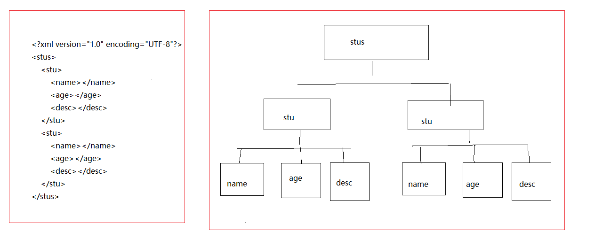
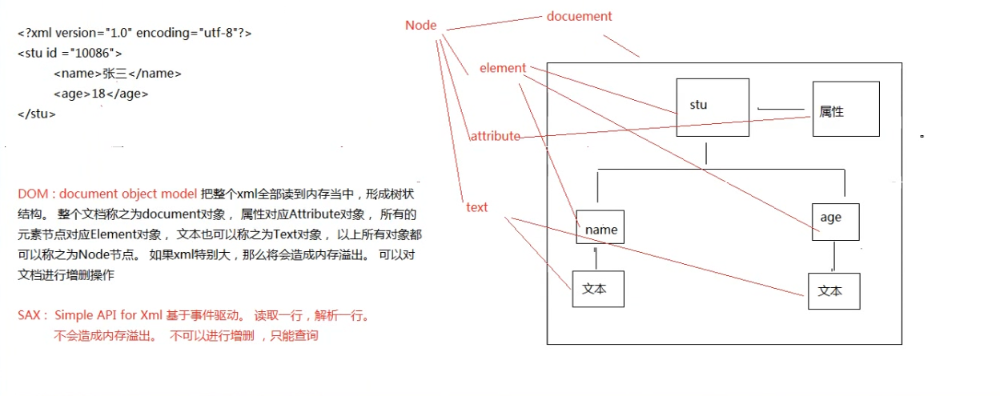
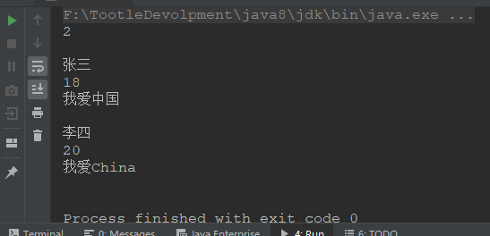
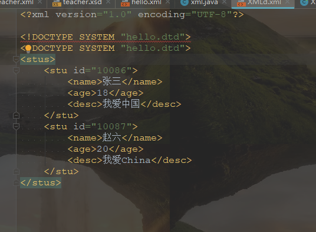
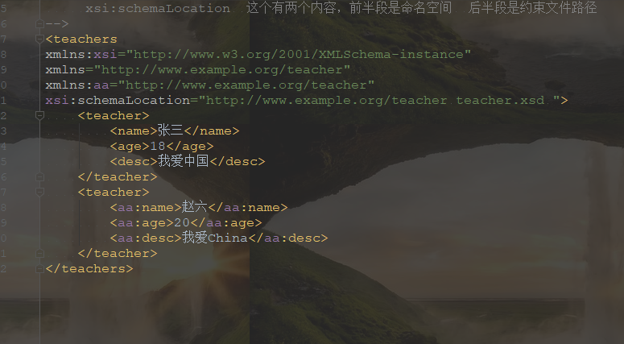

XML
一、什么是XML？
字面意思XML，即extendsible markup language 可扩展的标记语言
二、XML有什么用？
- 可用来保存数据
- 可用来做配置文件
- 数据传输载体
三、XML结构
<?xml version="1.0" encoding="UTF-8"?>
<stus>
<stu>
<name></name>
<age></age>
<desc></desc>
</stu>
<stu>
<name></name>
<age></age>
<desc></desc>
</stu>
</stus>一个简单的XML文件，里面的元素结构为：

XML结构是一个倒装树形结构
四、定义XML
XML其实就是一个文件后缀为XML的文件，形如：abc.xml
- 文档声明
<?xml version = "1.0" encoding = "utf-8" standalone="yes"?>version：解析这个xml文件时会使用什么版本的解析器解析
encoding：解析XML中文字十，使用什么编码来解析，例如如果encoding是”utf-8”，那么保存文件时也必须使用utf-8来保存，在window下，默认的ANSI编码其实就是是GBK，要改为UTF-8，如果不想改那就将encoding改为GBK或者是GB2314，为了通用建议使用utf-8
standalone：no - 该文档会依赖其他文档 yes - 该文档不会依赖其他文档 ，是一个独立文档
一个标准的xml文件格式就写好了，
五、元素定义（标签）
其实就是标签，<> 括起来的都是元素，成对出现，例如
<stu></stu>文档声明下的第一个元素叫做根元素（根标签），值得注意的是，之后写的其他元素必须在根标签中
标签里面可以嵌套标签
空标签
<age/>这种标签即是开始也是结束，一般配合属性来使用 <stus> <name>张三</name> <age/> </stus>标签可以自定义
Xml命名规则 XML命名必须遵循以下规则： XML 元素必须遵循以下命名规则： 名称可以含字母、数字以及其他的字符 名称不能以数字或者标点符号开始 名称不能以字符 “xml”（或者 XML、Xml）开始 名称不能包含空格 可使用任何名称，没有保留的字词。简单元素&复杂元素
简单元素
元素中包含了文字
复杂元素
元素中包含了其他元素
元素中间添加属性
<?xml version="1.0" encoding="UTF-8"?> <stus id=008311> <元素名称 属性名称="属性值" /> <!--<id>1008611</id>--> <name>张三</name> <age/> <desc></desc> </stus>XML注释
与html注释一样
<!-- 需要注释的文字 -->比如：
<!--<id>1008611</id> <name>张三</name> <age/> <desc></desc>-->值得注意的是：文档注释不能放在第一行，必须放在XML声明的下面，否则会报错。
六、CDATA区
非法字符
严格的讲，XML中只有字符”<”和字符”&”是非法的
也就是说
<name>张三<</name>标签会报错，但是如果我们一定要用的话，就用<&来表示，非法的原因是：
“<” 会产生错误，因为解析器会把该字符解释为新元素的开始。
“&” 也会产生错误，因为解析器会把该字符解释为字符实体的开始。
如果某段字符串中有过多的字符，并且里面包含了类似标签关键字的这种文字，不想让XML解析器去解析，那么就可以用CDATA来包装，不过这个CDATA比较少见通常实在服务器给客户端返回数据的时候
格式为： <desc><![CDATA[<a href="wwwww">asdsadas</a> ]]></desc>
七、XML解析
XML解析方式
XML解析方式有很多种，但常见的有以下两种
DOM
SAX

针对以上两种解析方式的API
针对以上两种解析方式，给出的解决方案有哪些？
jaxp sun公司，比较繁琐 jdom dom4j 最常用，使用比较广泛dom4j基本入门
创建SaxReader对象
依赖jar包
<!-- https://mvnrepository.com/artifact/dom4j/dom4j --> <dependency> <groupId>dom4j</groupId> <artifactId>dom4j</artifactId> <version>1.6.1</version> </dependency>指定解析的xml
获取根元素
根据根元素获取子元素下面的子孙元素
<?xml version="1.0" encoding="UTF-8"?> <stus> <stu> <name>张三</name> <age>18</age> <desc>我爱中国</desc> </stu> <stu> <name>李四</name> <age>20</age> <desc>我爱China</desc> </stu> </stus> ------------------------------------------------------ public class MainTest { public static void main(String[] args) { try { //创建SAX读取对象 SAXReader reader = new SAXReader(); //指定解析的xml源 Document document = reader.read(new File("F:\\TootleDevolpment\\workspaces\\MapDemo\\httpServletDemo\\src\\main\\java\\com\\XmlTest\\hello.xml")); //获取根元素 Element rootElement = document.getRootElement(); //获取更元素下所有子元素 List<Element> elements = rootElement.elements(); //获取子元素长度 System.out.println(elements.size()); System.out.println(); //遍历子元素 for (Element e : elements) { System.out.println(e.element("name").getText()); System.out.println(e.element("age").getText()); System.out.println(e.element("desc").getText()); System.out.println( ); } //System.out.println(rootElement.element("stu").element("name").getText()); } catch (DocumentException e) { e.printStackTrace(); } } }运行结果：

Xpath入门
dom4j里面支持Xpath的写法。Xpath其实是xml的路径语言，支持我们在解析XML的时候，能够快速定位到具体某一个元素
添加依赖jar包
<!-- https://mvnrepository.com/artifact/jaxen/jaxen --> <dependency> <groupId>jaxen</groupId> <artifactId>jaxen</artifactId> <version>1.1-beta-6</version> </dependency>在查找所指定的节点的时候，能够快速定位到具体的某一个元素
代码如下：
<?xml version="1.0" encoding="UTF-8"?> <stus> <stu> <name>张三</name> <age>18</age> <desc>我爱中国</desc> </stu> <stu> <name>李四</name> <age>20</age> <desc>我爱China</desc> </stu> </stus> ------------------------------------------------------ public class XPathTest { public static void main(String[] args) { try { //创建SAX读取对象 SAXReader reader = new SAXReader(); //指定解析的xml源 Document document = reader.read(new File("F:\\TootleDevolpment\\workspaces\\MapDemo\\httpServletDemo\\src\\main\\java\\com\\XmlTest\\hello.xml")); //获取根元素 Element rootElement = document.getRootElement(); //获取单一元素 Element nameElecment = (Element) rootElement.selectSingleNode("//name"); //System.out.println(nameElecment.getText()); //获取该元素的所有元素 List<Element> list = rootElement.selectNodes("//name"); for (Element o : list) { System.out.println(o.getText()); } } catch (DocumentException e) { e.printStackTrace(); } } }
XML约束
如下的文档，属性id的值一样，这在生活几乎是不可能出现的，就好像两个人不可能有同样的身份证号，一个人也不可能同时拥有两到三个正式的名字，那么在XML中怎样保证属性值的唯一，或者是一个元素在同一标签下只能出现一次，不能出现多次，甚至是规定里面只能出现具体的元素名字。
<?xml version="1.0" encoding="UTF-8"?> <stus> <stu id="10086"> <name>张三</name> <age>18</age> <desc>我爱中国</desc> </stu> <stu id="10086"> <name>李四</name> <name>王五</name> <name>赵六</name> <age>20</age> <desc>我爱China</desc> </stu> </stus>XML文档约束的两大类
DTD
语法自成一派，早期就出现的，可读性比较差
<?xml version="1.0" encoding="UTF-8"?> <!--文档类型 根标签 网络传输 dtd名称 dtd路径 --> <!--<!DOCTYPE stus PUBLIC "//UNKNOWN" "hello.dtd">--> <!--引入本地dtd--> <!--文档类型 根标签 本地传输 dtd名称 dtd路径 --> <!--<!DOCTYPE stus SYSTEM "hello.dtd">--> <!--在xml中嵌套dtd文件--> <!DOCTYPE stus [ <!ELEMENT stus (stu,stu) > <!ELEMENT stu (name,age,desc) > <!ELEMENT name (#PCDATA) > <!ELEMENT age (#PCDATA) > <!ELEMENT desc (#PCDATA) > ]> <stus> <stu> <name>张三</name> <age>18</age> <desc>我爱中国</desc> </stu> <stu> <!--<name>李四</name> <name>王五</name>--> <name>赵六</name> <age>20</age> <desc>我爱China</desc> </stu> </stus>
<!--<!ELEMENT 元素的名称 元素的类型 >-->
<!ATTLIST stu id ID #REQUIRED > <!--stu有一个属性 文本类型 该属性可有可无-->
<!ELEMENT stus (stu)+ > <!-- stus下有一个或者多个stu元素-->
<!ELEMENT stu (name,age,desc) > <!--stu下有三个元素，且顺序必须为name,age,desc-->
<!ELEMENT name (#PCDATA) >
<!ELEMENT age (#PCDATA) >
<!ELEMENT desc (#PCDATA) >
元素个数:
+ 一个或多个
* 零个或多个
? 零个或一个
属性的定义类型及默认值类型:见下方图
```

2. Schema
其实就是一个xml，使用xml的语法规则，xml解析起来比较方便，Schema的出现是为了替代DTD，但是由于Schema约束文本内容比DTD内容还要多，不方便阅读及书写，所以还没有真正意义上完全替代DTD
```xml
实例文档
<?xml version="1.0" encoding="UTF-8"?>
<!-- xmlns:xsi 这个值必须这样写，因为这个值已经固定了
xmlns xml的命名空间，必须和Schema文件中的xmlns一样
xsi:schemaLocation 这个有两个内容，前半段是命名空间 后半段是约束文件路径
-->
<teachers
xmlns:xsi="http://www.w3.org/2001/XMLSchema-instance"
xmlns="http://www.example.org/teacher"
xsi:schemaLocation="http://www.example.org/teacher teacher.xsd ">
<teacher>
<name>张三</name>
<age>18</age>
<desc>我爱中国</desc>
</teacher>
<teacher>
<name>赵六</name>
<age>20</age>
<desc>我爱China</desc>
</teacher>
</teachers>
--------------------------------------------------------
<!--约束文档：-->
<?xml version="1.0" encoding="UTF-8" ?>
<!--xmlns:就是xml namespace
targetNamespace:目标名称空间。下面定义的那些元素都与这个命名空间绑定上
elementFormDefault：元素格式化情况
maxOccurs="unbounded" 无限多次 限定元素出现次数-->
<schema xmlns="http://www.w3.org/2001/XMLSchema"
targetNamespace="http://www.example.org/teacher"
elementFormDefault="qualified">
<element name="teachers">
<complexType>
<sequence>
<element name="teacher" maxOccurs="unbounded">
<complexType>
<sequence>
<!--name 指的是你xml中的元素名称 type指的是元素类型-->
<element name="name" type="string"></element>
<element name="age" type="int"></element>
<element name="desc" type="string"></element>
</sequence>
</complexType>
</element>
</sequence>
</complexType>
</element>
</schema>
```xml命名空间的作用
一个xml如果想指定它的约束规则，建设使用的是DTD，那么这个xml只能指定一个DTD，不能指定多个DTD，如下图

但是一个XML可以同时指定多个Schema，例如

命名空间的作用就是在写元素时，可以指定元素使用的一套规则。